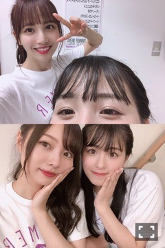
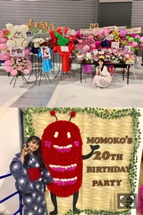

2019/0911Wed
お疲れ様です、桃子です。
お久しぶりのブログになりました。
そして神宮の3日間は少しでしたが
ライブに出させて頂きました。
リハーサルに参加するのも、たくさんの
メンバーに会うのも久しぶりでしたので
気まずくて居づらかったりもしたけど、
みんなが普通に接してくれて
優しかったです。
心がへこんでいる時には聞く耳を持てず、
自分の殻に閉じこもってしまうので...
お休みをする前よりも、
もっとたくさんの優しさを、
感じられることができたということは
前よりも少し元気になれているようです。
3番目の風では、初めてステージに
立った時くらい緊張した気がしますよね、
トキトキメキメキはやっぱり
れんたんのキラキラが
可愛すぎてメロメロで
たまおちゃんが、ももこの斜め前で
輝いているのも心がいっぱいなくらい
愛おしい、とってもすきです、
3期曲で1番すきになりました


だいすき、へへへ
キスの手裏剣は隣にいた
さくらさまが可愛かったです
神宮しか出れていないけど4期生とも
目を合わすことができて、
レイちゃんと少しお話ができました、
あやめちゃんともお話したいな
ももこを少しでもすきって言ってくれた
珍しすぎるおふたりなんです
でも乃木坂に入ったいま、
ももこをすきと言ってしまったことを
後悔しているかもしれない、笑
れいかさんが卒業されました。
リハーサルでお久しぶりにお会いした時
ももこ、最近どうなの？と
優しく声をかけて来てくださって、
少し前にはらじらーに来てくださって、
たくさん話すことは少なかったけど
れいかさんの温かさに救われました
心が苦しかったです。
ありがとうございました。
9月の7日、8日は
名古屋での個別握手会、全国握手会
ありがとうございました。
個別握手会では、
生誕祭をしていただきました。
レーンがももこのすきなクマさんに
そお星人、ももこの描くももくまさん。
みなさんが寄せ書きしてくれた
メッセージやアルバムも、
クマさんとフクロウのぬいぐるみ
中国のファンの方々からの絵本も
そして、沢山のお花もいただきました！

沢山の愛と優しさで心がいっぱいになって
申し訳なさもいっぱいでした、笑
本当にありがとうございました。
もうすぐ20歳になります。

2019/09/11 12:24
コメント(1105)
どんなことがあっても自分の道を貫いて。
自分の意思を尊重してね。応援してるよ。
自分の意思を尊重してね。応援してるよ。
桃子おかえり！
そしてあと少しで誕生日！
おめでとうね！
そしてあと少しで誕生日！
おめでとうね！
ブログありがと！
２０歳になっても元気で頑張って！
２０歳になっても元気で頑張って！
生誕祭見たよ^ ^
申し訳なさなんて感じないで！
桃ちゃんらしく、桃ちゃんのペースで進んでいこう！！
申し訳なさなんて感じないで！
桃ちゃんらしく、桃ちゃんのペースで進んでいこう！！
桃子ブログ更新ありがとう！
そしてお帰り！
神宮初日観に行って桃子が出てきたとき素直に涙が出ました。
桃子の笑顔が見れて本当に嬉しかった！ありがとう！
無理せず桃子のペースでこれからも活動頑張ってね！
そしてお帰り！
神宮初日観に行って桃子が出てきたとき素直に涙が出ました。
桃子の笑顔が見れて本当に嬉しかった！ありがとう！
無理せず桃子のペースでこれからも活動頑張ってね！
桃子ー！！！！！！！！！神宮初日見に行ってたんだけど涙出るほどに嬉しかった…！！！ 3番目の風の時はガン泣きでした笑 握手会も大丈夫だったかな？ 少しずつでも前に進める事を祈ってるよ！ …自分も握手したかったなぁとか思っちゃったけども笑 次の個握や全握！楽しみにしてる、っていうとプレッシャーかな…( ´ཫ` ) 久々に桃子とお話したいなって思ってるよ
20歳も全力でお祝いさせてください。素の桃子が大好きだよ
これからも一緒にがんばろー！！！
Jより(´・J・`)
20歳も全力でお祝いさせてください。素の桃子が大好きだよ
これからも一緒にがんばろー！！！
Jより(´・J・`)
復帰おめでと！
ゆっくり焦らずまた桃子らしく頑張ってください！
次のシングル握手絶対行きます、
ゆっくり焦らずまた桃子らしく頑張ってください！
次のシングル握手絶対行きます、
桃子〜！！！ブログありがと〜！！！
神宮もいったし個握と全握も行けたよ〜！！！
個握で握手できなかったけど、生誕祭で最前列にいたら手を振ってくれたのめちゃくちゃ嬉しかった！
全握で報告したら喜んでくれたし！
あ、今全握で言った通りにフランスにいます笑
なので今度桃子と握手できる時に報告するの楽しみにしてるね〜
神宮もいったし個握と全握も行けたよ〜！！！
個握で握手できなかったけど、生誕祭で最前列にいたら手を振ってくれたのめちゃくちゃ嬉しかった！
全握で報告したら喜んでくれたし！
あ、今全握で言った通りにフランスにいます笑
なので今度桃子と握手できる時に報告するの楽しみにしてるね〜
ブログ更新ありがとう！！！
神宮での3番目の風、最高だった！
やっぱ桃子じゃなきゃ！
キスの手裏剣でさくらさまの横にいた桃子が可愛かった！
そして、個握と全握桃子と話せてすごく楽しかった！ありがとう！
これからもずっと桃子のこと応援してるからねー！
神宮での3番目の風、最高だった！
やっぱ桃子じゃなきゃ！
キスの手裏剣でさくらさまの横にいた桃子が可愛かった！
そして、個握と全握桃子と話せてすごく楽しかった！ありがとう！
これからもずっと桃子のこと応援してるからねー！
名古屋の全国握手会2回来たよー！
都城出身ですって言ったけど覚えてるかな？
また12月に都城の話しに行くからねー！！
都城出身ですって言ったけど覚えてるかな？
また12月に都城の話しに行くからねー！！
おかえり。神宮すごく楽しかったです
また元気な姿楽しみにしてるね
また元気な姿楽しみにしてるね
ももこおかえり！！
無理せず桃子らしく桃子らしさ全開でマイペースに頑張ってください！
桃子らしさ全開の桃子が一番可愛いぞ！
無理せず桃子らしく桃子らしさ全開でマイペースに頑張ってください！
桃子らしさ全開の桃子が一番可愛いぞ！
大好きだよー！
桃子ー！！！
桃子ー！！！
ももちゃん20歳も楽しんで！
みんなに、笑顔を届けてね
みんなに、笑顔を届けてね
ブログの更新ありがどうございます！
元気そうでよかったです
これからも体調に気をつけて頑張ってください
元気そうでよかったです
これからも体調に気をつけて頑張ってください
桃子
誕生日おめでとう
本当に嬉しいな、ももこのブログの更新。
ももこちゃん
25枚目のツングル待てます！
ずっと応援します。
中国ファン Oston リ
（あの、中国ファンの本が読んでますか？）
誕生日おめでとう
本当に嬉しいな、ももこのブログの更新。
ももこちゃん
25枚目のツングル待てます！
ずっと応援します。
中国ファン Oston リ
（あの、中国ファンの本が読んでますか？）
秋の夜
みて思い出す
3番目の風
季語は秋の夜です！
3番目の風で出て来た時は
本当に嬉しかったです！！
みて思い出す
3番目の風
季語は秋の夜です！
3番目の風で出て来た時は
本当に嬉しかったです！！
桃子さんブログありがとう
神宮初日の三風は今まで見た中で1番でした
やっぱりステージで輝いてるあなたを見るのが何よりの幸せです
もうすぐ20歳！ほんとにおめでとう！
浴衣もとっても似合ってるよ
20歳になってもずっと応援しています
神宮初日の三風は今まで見た中で1番でした
やっぱりステージで輝いてるあなたを見るのが何よりの幸せです
もうすぐ20歳！ほんとにおめでとう！
浴衣もとっても似合ってるよ
20歳になってもずっと応援しています
桃子ブログ更新ありがとう！
神宮初日桃子が出てきた時の感動は今でも忘れない！
この夏最高の思い出になりました。本当にありがとう！
神宮初日桃子が出てきた時の感動は今でも忘れない！
この夏最高の思い出になりました。本当にありがとう！
桃子、ほんとに復活おめでとう！そしてありがとう！！！！！LIVEで輝いている桃子がほんとに美しくてかっこよくて大好き名古屋の全握でも伝えることが出来て良かった！！全握の時に僕の手前でレーンが一旦止まったの覚えてるかな？その時に、桃子が手を合わせてごめんなさいって謝ってくれたのほんとにびっくりしたよ。桃子はほんとに優しくていい子だなって思ったし桃子推しでほんとに良かったと思ったよ！これからもずっと桃子オンリーで行きます！！
本当にライブ出てくれてありがとう！
桃子が最高の夏を作ってくれて感謝してる！
桃子が最高の夏を作ってくれて感謝してる！
ブログ更新ありがと！！
初コメです。
復帰おめでとう
初コメです。
復帰おめでとう
ももこー
握手会楽しかったよ
これからも元気な桃子をみたいよーーー
無理しないでね
応援してるよー
握手会楽しかったよ
これからも元気な桃子をみたいよーーー
無理しないでね
応援してるよー
ブログ更新ありがとう！
全ツに握手会お疲れ様！
見れなかったのが悔しいけど、桃子が元気な姿で、パフォーマンスしてたみたいで良かったよ。
メンバーも優しく接してくれて、やっぱ乃木坂っていいなって桃子思うと思うけど、こんなメンバーに囲まれて幸せだなーって羨ましくおれは思うよ。
自慢出来る仲間だし、友達だね。
握手会は、全握行かせてもらったよ！直接誕生日おめでとうって言えてよかった。
初めて握手したんだけど、テレビで見るよりも笑顔がとても素敵で可愛かった。もっと好きになったよ。
まだ先の話かもしれないけど、個握復帰した時は握手券取るね！
少し早いけど、お誕生日おめでとう。桃子にとって良い年になりますように。
応援してます！
大好きです。
ユウキ
全ツに握手会お疲れ様！
見れなかったのが悔しいけど、桃子が元気な姿で、パフォーマンスしてたみたいで良かったよ。
メンバーも優しく接してくれて、やっぱ乃木坂っていいなって桃子思うと思うけど、こんなメンバーに囲まれて幸せだなーって羨ましくおれは思うよ。
自慢出来る仲間だし、友達だね。
握手会は、全握行かせてもらったよ！直接誕生日おめでとうって言えてよかった。
初めて握手したんだけど、テレビで見るよりも笑顔がとても素敵で可愛かった。もっと好きになったよ。
まだ先の話かもしれないけど、個握復帰した時は握手券取るね！
少し早いけど、お誕生日おめでとう。桃子にとって良い年になりますように。
応援してます！
大好きです。
ユウキ
桃子～！
ブログ更新ありがと～！！！
神宮の時は少しだったけどその少しでも僕にとっては嬉しかったしめちゃめちゃ輝いてたよ！！ありがとね
これからも体調には気おつけて過ごしてね
あとちょい早いけど誕生日おめでと！！
ずっとずっと応援してます！！
ブログ更新ありがと～！！！
神宮の時は少しだったけどその少しでも僕にとっては嬉しかったしめちゃめちゃ輝いてたよ！！ありがとね
これからも体調には気おつけて過ごしてね
あとちょい早いけど誕生日おめでと！！
ずっとずっと応援してます！！
ももたんブログ更新ありがとう！！！
握手会ありがとう！！！！！
麻衣ちゃんとのお話楽しかったよ！
握手会ありがとう！！！！！
麻衣ちゃんとのお話楽しかったよ！
桃子ひさびさにブログありがと！
桃子が少し元気になってくれるだけでこちらはとっても元気になれるよ！
これからも元気にやってくれると嬉しいです！
桃子が少し元気になってくれるだけでこちらはとっても元気になれるよ！
これからも元気にやってくれると嬉しいです！
神宮3日間、名古屋での個握と全握おつかれさまでした！
個握に剣道着で行った者です笑
全ツとっても輝いてましたよ！！トキトキメキメキとキスの手裏剣も可愛らしかったです
同じ剣道をやっていたということで桃子さんの存在を知ってファンになりました
どれだけ休んだってメンバーの皆さんはもちろんファンも桃子さんのことが大好きでいつまでも応援し続けます！！
これからも体調に気をつけて無理せず頑張ってください！！
個握に剣道着で行った者です笑
全ツとっても輝いてましたよ！！トキトキメキメキとキスの手裏剣も可愛らしかったです
同じ剣道をやっていたということで桃子さんの存在を知ってファンになりました
どれだけ休んだってメンバーの皆さんはもちろんファンも桃子さんのことが大好きでいつまでも応援し続けます！！
これからも体調に気をつけて無理せず頑張ってください！！
ももたんブログ更新ありがとう！！！
神宮でももたんが見れて嬉しい反面元気になったのかな？と少し心配になったりもしていろんな感情が込み上げてきたけど、7日の個握で元気な姿を見れて良かった！！
これからは少しの間ゆっくり休んで、また元気な姿を見せてね！！
桃子がどれだけお休みしてても、桃子ファンたちは離れたりしないと思うから、元気になったらまたいつも通りの桃子でいてくれればこっちも嬉しいから！
桃子が元気になるまでいつまでも待ってます！！
金沢のしんじより
神宮でももたんが見れて嬉しい反面元気になったのかな？と少し心配になったりもしていろんな感情が込み上げてきたけど、7日の個握で元気な姿を見れて良かった！！
これからは少しの間ゆっくり休んで、また元気な姿を見せてね！！
桃子がどれだけお休みしてても、桃子ファンたちは離れたりしないと思うから、元気になったらまたいつも通りの桃子でいてくれればこっちも嬉しいから！
桃子が元気になるまでいつまでも待ってます！！
金沢のしんじより
神宮見に行ったよ！
三番目の風で桃子出てくるとは思わなかったからビビったけどめちゃくちゃ嬉しかった
はやいけど誕生日おめでとう
三番目の風で桃子出てくるとは思わなかったからビビったけどめちゃくちゃ嬉しかった
はやいけど誕生日おめでとう
桃子おかえりなさい
神宮の三番目の風良かったよ^ ^
らじらーも隔週で声聴けるし、藤森さんとのコントも楽しいし笑
辛いときは周りに頼ってね。
麻衣姉さんも寂しいと思うよ？
らじらーも隔週で声聴けるし、藤森さんとのコントも楽しいし笑
辛いときは周りに頼ってね。
麻衣姉さんも寂しいと思うよ？
ももちゃん 可愛い
桃子〜
おかえり〜
おかえり〜
桃子、ブログ更新ありがとう‼︎
神宮初日の三番目の風で桃子が出てきた時、とても嬉しかったし安心しました。沢山の不安と緊張の中出演してくれてありがとう☺︎桃子を好きになって後悔してる人は1人もいないと思います。これからも桃子らしく桃子のペースで活動してください‼︎ずっと応援してます☺︎
神宮初日の三番目の風で桃子が出てきた時、とても嬉しかったし安心しました。沢山の不安と緊張の中出演してくれてありがとう☺︎桃子を好きになって後悔してる人は1人もいないと思います。これからも桃子らしく桃子のペースで活動してください‼︎ずっと応援してます☺︎
おかえりなさい！
待ってたよー これからも応援してるよ！
待ってたよー これからも応援してるよ！
少し元気になれたみたいで良かったよ。
ももこ〜待ってたよ〜！！
あともう少しで２０歳だね〜
ちょっと早いけど誕生日おめでとう！
神宮で桃子が出てきてくれた時めっちゃ嬉しかったよ！年内桃子を見れるのは8月の握手会が最後だと思ってたから…
改めておかえり！24枚目はゆっくり休んでね！
ずっと桃子推しで応援してます
ももこ、すき。
あともう少しで２０歳だね〜
ちょっと早いけど誕生日おめでとう！
神宮で桃子が出てきてくれた時めっちゃ嬉しかったよ！年内桃子を見れるのは8月の握手会が最後だと思ってたから…
改めておかえり！24枚目はゆっくり休んでね！
ずっと桃子推しで応援してます
ももこ、すき。
神宮で3番目の風の桃子が見れて嬉しかったよ！れ
めっちゃ可愛かった！
めっちゃ可愛かった！
ブログタイトルないからドキッとしちゃった（笑）桃子、乃木坂に入ってくれてありがとう！悩みもたくさんあると思う。無理せずにね、桃子の傍にはたくさんの人達がいるから！1人じゃないよ！ぴーす！20歳もおめでとう！！！！！！！家でケーキ焼いて桃子(推し)不在の誕生日会を一人でやるんだあ〜。食べに来てもいいよ？ ずっと応援してるよ！ファイト

お帰り！
大好きです！
大好きです！
桃子ブログ更新してくれてありがとう
少しずつだけど笑顔の桃子を見ることができて嬉しいです
20歳になっても桃子はすごく素敵だと思います！！
これまでの桃子もこれからの桃子も全部ひっくるめて大好きですー！！╭( ･ㅂ･)و ̑̑ ｸﾞｯ !
少しずつだけど笑顔の桃子を見ることができて嬉しいです
20歳になっても桃子はすごく素敵だと思います！！
これまでの桃子もこれからの桃子も全部ひっくるめて大好きですー！！╭( ･ㅂ･)و ̑̑ ｸﾞｯ !
ブログ更新、ありがとう。
神宮のライブで、元気な桃子の姿を見ることが出来てとても嬉しかったです。最高のライブでした。
名古屋の個別握手会での生誕祭、見させていただきました。浴衣が似合っていてすごく可愛かったです。次の日の全国握手会では、普段と変わらない元気な桃子に会うことが出来て最高でした。
これからも体に気をつけて、自分のことを第一に考えてください。ずっと応援してます。
神宮のライブで、元気な桃子の姿を見ることが出来てとても嬉しかったです。最高のライブでした。
名古屋の個別握手会での生誕祭、見させていただきました。浴衣が似合っていてすごく可愛かったです。次の日の全国握手会では、普段と変わらない元気な桃子に会うことが出来て最高でした。
これからも体に気をつけて、自分のことを第一に考えてください。ずっと応援してます。
桃子ブログ更新ありがとう！！
神宮で復活した時はほんとに鳥肌たって嬉しすぎました！！
今後も元気に頑張ってください！！
神宮で復活した時はほんとに鳥肌たって嬉しすぎました！！
今後も元気に頑張ってください！！
トキトキメキメキ最高！！
ももこ無理しないで
ももこ無理しないで
いいね桃ちゃん！おかえりなさい！
桃ちゃんはもうすぐ20歳か、いやーちょっと大変じゃない？今はもうお姉さんになってしまったよね、後輩の4期が入ったから。頑張ってくれね！
桃ちゃんはもうすぐ20歳か、いやーちょっと大変じゃない？今はもうお姉さんになってしまったよね、後輩の4期が入ったから。頑張ってくれね！
モバメもブログも更新ありがとう。
心が疲れちゃってる時は
何も考えずゆっくり休んでください。
と言っても、真面目な桃子は
休んでも色々考えちゃうんだろうけど…。
だけど、しっかり休んでまた素敵な笑顔を見せてくれたら
嬉しいです。
桃子の色々なところが大好きだけど
やっぱり、心からの笑顔が1番好き！
ずっと待ってるよ
疲労に聞くマッサージの りゅーきより
心が疲れちゃってる時は
何も考えずゆっくり休んでください。
と言っても、真面目な桃子は
休んでも色々考えちゃうんだろうけど…。
だけど、しっかり休んでまた素敵な笑顔を見せてくれたら
嬉しいです。
桃子の色々なところが大好きだけど
やっぱり、心からの笑顔が1番好き！
ずっと待ってるよ
疲労に聞くマッサージの りゅーきより
桃子お帰り！
ももちゃんこんにちは！
ブログ更新ありがとう！！
神宮お疲れ様〜！
やっぱり三番目の風のセンターは桃子だなって改めて思った！
徐々に仕事増やしていく感じかな？
無理せず頑張ってねー
ブログ更新ありがとう！！
神宮お疲れ様〜！
やっぱり三番目の風のセンターは桃子だなって改めて思った！
徐々に仕事増やしていく感じかな？
無理せず頑張ってねー


いつもひたむきで素直で真っ直ぐな桃子が好きよ！
お誕生日おめでとう！これからも応援し続けます！